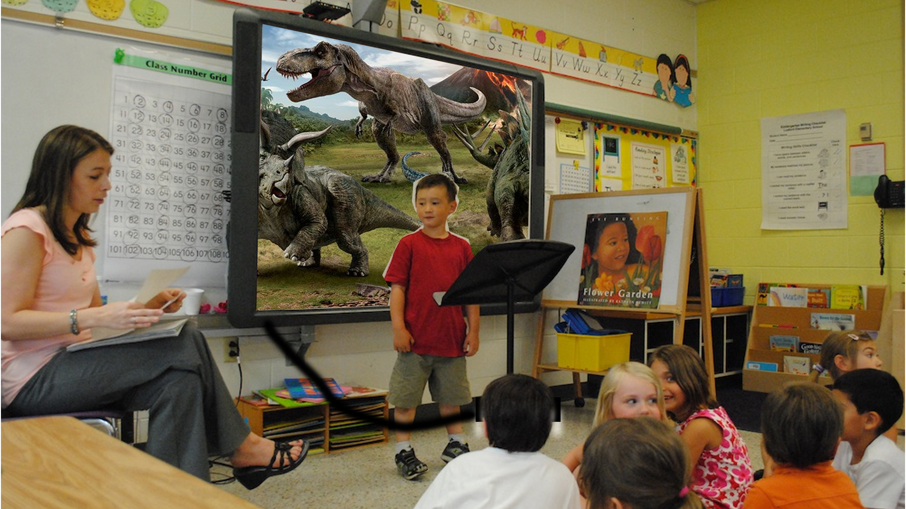
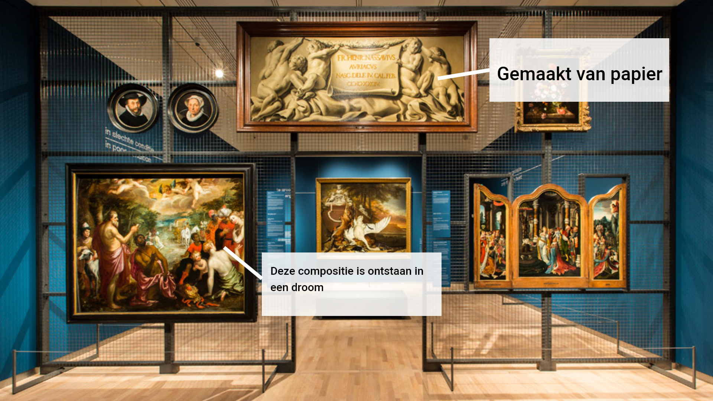
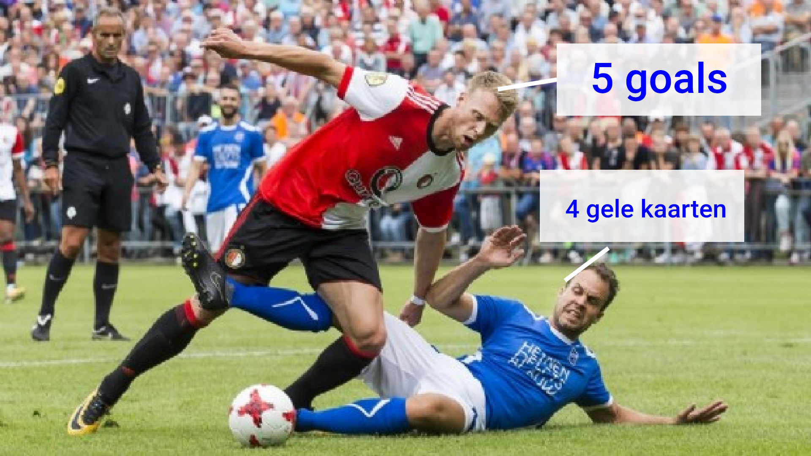
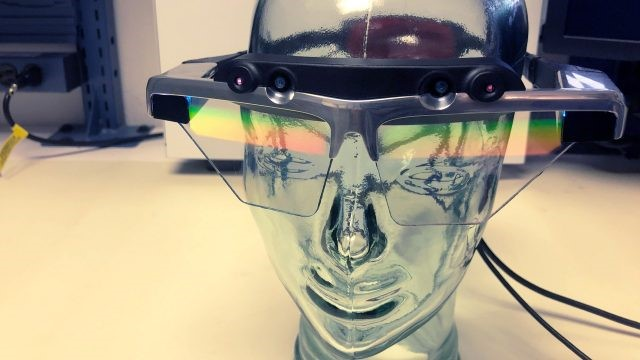

Wanneer een persoon, laten we zeggen een leerling uit groep 5 een presentatie moet geven, dan kan het voorkomen dat de kinderen in de klas geen zin hebben om te luisteren. Omdat deze generatie zich voornamelijk bezig houdt met de digitale wereld, is het wellicht beter om een presentatie te maken virtual reality, waar de leerling verteld over een onderwerp naar keuze en de leerlingen om hun heen kunnen kijken en leren over het onderwerp door ook nog eens in de wereld om hun heen te kijken.
Kunstliefhebbers willen graag zoveel mogelijk weten over een collectie of zelfs al over een enkel schilderij. Meestal hangt er een bord naast elk schilderij in de collectie met daarop informatie over het doek en / of de ideeën erachter. Deze kunstliefhebbers kunnen in het Mauritshuis extra betalen voor een VR rondleiding, waar ze gewoon de normale route bewandelen als ieder andere gast, alleen zullen er bij een aantal schilderijen unieke details en of weetjes in beeld springen
Kunstliefhebbers willen graag zoveel mogelijk weten over een collectie of zelfs al over een enkel schilderij. Meestal hangt er een bord naast elk schilderij in de collectie met daarop informatie over het doek en / of de ideeën erachter. Deze kunstliefhebbers kunnen in het Mauritshuis extra betalen voor een VR rondleiding, waar ze gewoon de normale route bewandelen als ieder andere gast, alleen zullen er bij een aantal schilderijen unieke details en of weetjes in beeld springen
De DigiLens 150 Degree Waveguide is een Artificial Intelligence headset die relatief klein is vergeleken met zijn “schermgrootte”. Zoals je kan zien op de onderstaande foto is het apparaat ter grootte van een gewoon formaat bril. Het unieke aan deze uitgave is dat het een beeld kan geven van maar liefst 150 graden. Het werkt door structuren in een dun, transparant materiaal waardoor licht door het optische spectrum kan gaan in te bouwen in het glas. Op dit optische spectrum rust het licht, waardoor er een beeld wordt gevormd voor de ogen van de gebruiker. Omdat de manipulatie van licht zo precies is, werkt het optische spectrum als het ware als zowel een lens én een display tegelijkertijd. Dankzij dit project gaan er weer deuren open voor compactere optische ontwerpen die je kan vinden in huidige Augmented Reality headsets momenteel op de markt.
